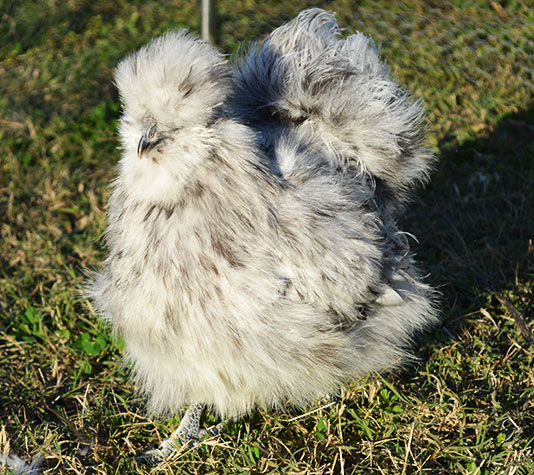
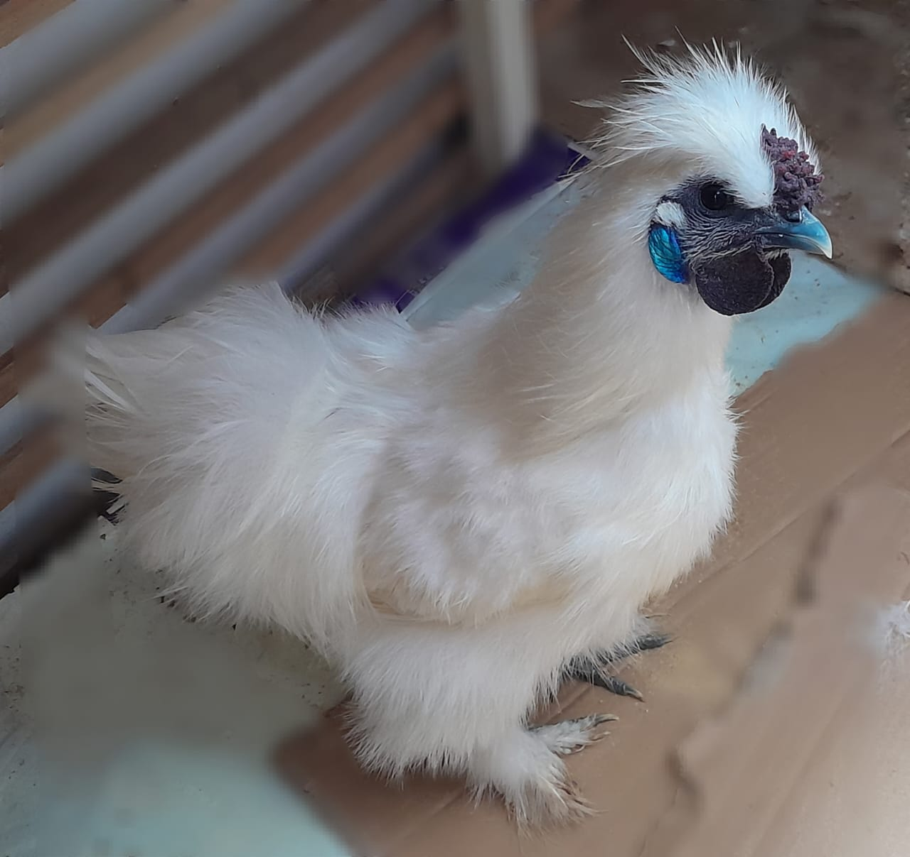

Gallinas Silkies
Gallina Blanca
Color: Blanca
Años: 2 años
Tamaño: 32 cm
Carácter: Dócil
Postura: Buena
Comprar
Gallina Beige
Color: Beige
Años: 1 año
Tamaño: 34 cm
Carácter: Dócil
Postura: Media
Comprar
Silkie Negro
Color: Negro
Años: 2.5 años
Tamaño: 30 cm
Carácter: Curiosa
Postura: Media
Comprar

Silkie Gris
Color: Gris
Años: 3 años
Tamaño: 31 cm
Carácter: Amigable
Postura: Buena
Comprar
Gallos Silkies

Gallo Blanco
Color: Blanco
Años: 2 años
Tamaño: 33 cm
Carácter: Nervioso
Adaptabilidad: Media
Comprar
Gallo Beige
Color: Beige
Años: 1 años
Tamaño: 30 cm
Carácter: Amigable
Adaptabilidad: Buena
Comprar
Gallo Negro
Color: Negro
Años: 2 años
Tamaño: 30 cm
Carácter: Curioso
Adaptabilidad: Media
Comprar
Gallo Gris
Color: Gris
Años: 2.5 años
Tamaño: 33 cm
Carácter: Curioso
Adaptabilidad: Media
Comprar